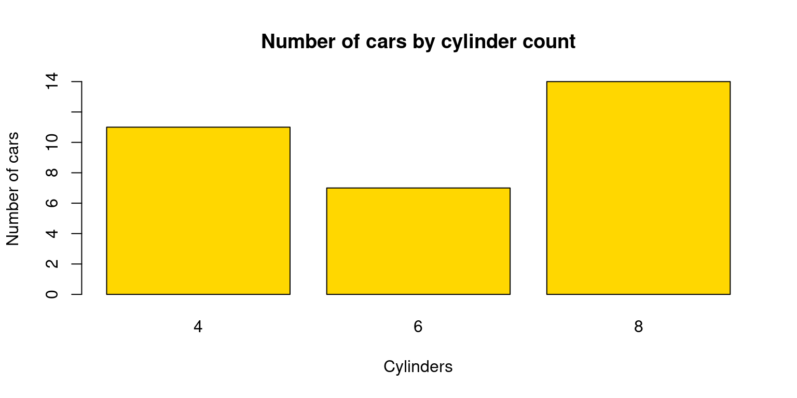
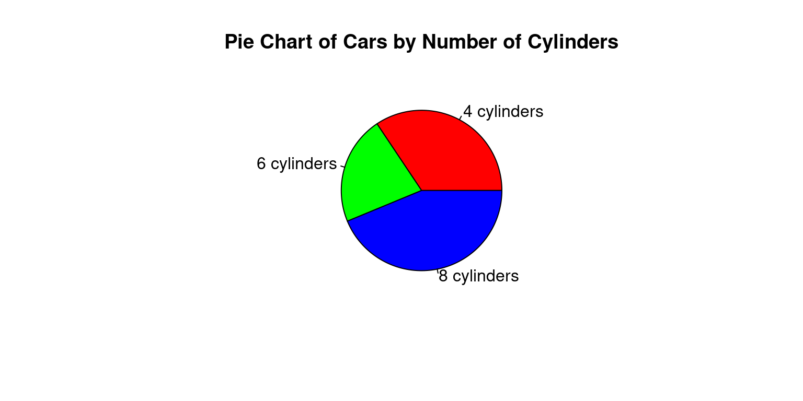
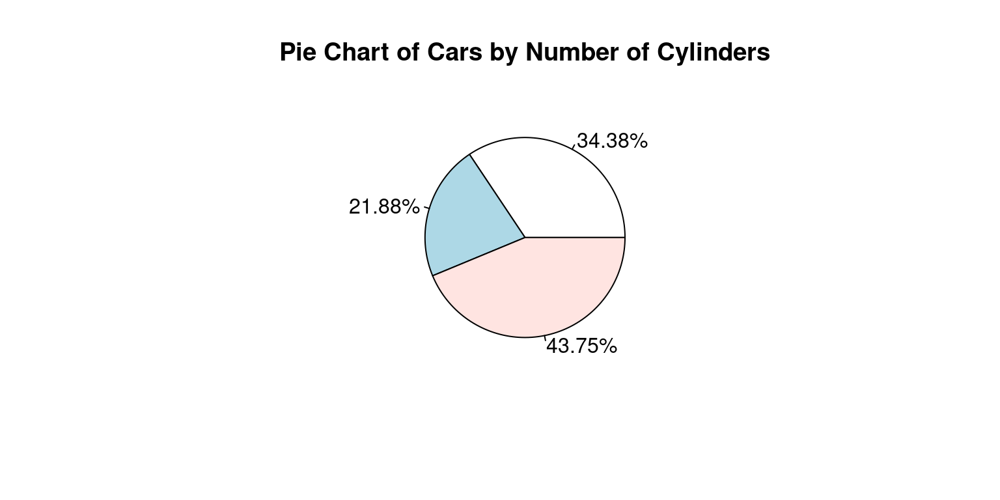
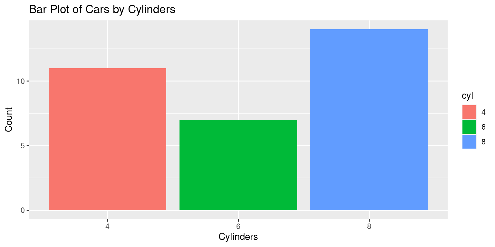
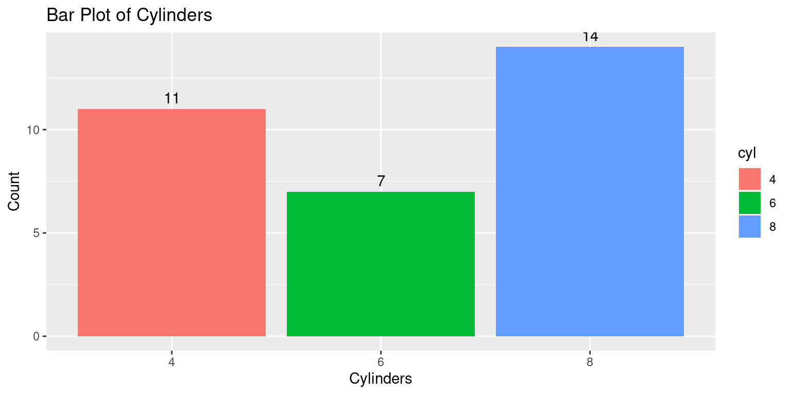
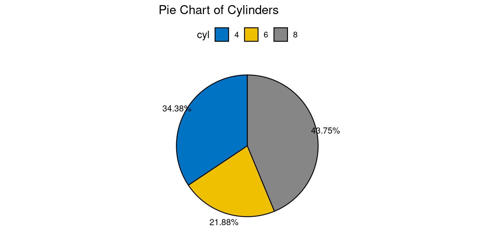

color <- c("red", "blue", "green", "red", "green", "yellow")
color_factor <- factor(color)Univariate Categorical data
Chapter 7, Last updated: Jan 2, 2023.
Exploring Univariate Categorical Data
This chapter explores how to summarize and visualize univariate, categorical data.
Categorical data is a type of data that can be divided into categories or groups. labels or categorical codes like “male” and “female,” “red,” “green,” and “blue,” or “A,” “B,” and “C” are frequently used to describe category data. This data type is commonly employed in research and statistics where you can categorize the data under various headings depending on their features, characteristics, or any other parameters [1]
There are several typical examples of categorical data.:
- Gender (male, female)
- Marital status (married, single, divorced)
- Education level (high school, college, graduate school)
- Occupation (teacher, doctor, engineer)
- Hair color (brown, blonde, red, black)
- Type of car (sedan, SUV, truck) [2]
Types of Categorical Data – Nominal, Ordinal Data
It is important to understand nominal and ordinal data.
`Nominal data`: This data type is characterized by variables that have two or more categories without any kind of order or priority. This name-based categorization means that nominal data represents whether a variable belongs to a certain category or not, but it does not convey any qualitative value about the variable itself. For example, ‘gender’ is a nominal data type, as it categorizes data into ‘male’ or ‘female’, and neither category is intrinsically superior to the other. Nominal data is usually represented by text labels or categorical codes. [2]
`Ordinal data`: Unlike nominal data, ordinal data categories have an inherent order. This order, however, does not provide any information about the exact differences between the categories. Common examples of ordinal data include the Likert scale in surveys, which ranges from “very dissatisfied” to “very satisfied,” or clothing sizes, which are typically “small,” “medium,” or “large.” While we know that “large” is bigger than “medium” and “medium” is bigger than “small,” we don’t know exactly how much bigger one is compared to the other.
- Ordinal data is frequently utilised to describe groups or categories that can be rated or sorted, such as educational level {high school, college, graduate school}, or movie reviews {G, PG, PG-13, R, NC-17}. [2]
Factor Variables in R
“Factor” is a term specifically used in R programming language to handle categorical data. Factors are the data objects which are used to categorize the data and store it as levels. They can store both strings and integers. They are useful in data analysis for statistical modeling. [3]
A factor variable has levels, which are the distinct categories of the variable. For instance, if we have a factor variable named “color”, the levels might be “red,” “blue,” and “green.” Each level corresponds to a category in the categorical data. Creation of a factor variable in R can be done as follows:
- In this example,
color_factoris a factor variable with four levels - “red”, “blue”, “yellow” and “green”.
levels(color_factor)[1] "blue" "green" "red" "yellow"- Data: Suppose we run the following code to prepare the
mtcarsdata for subsequent analysis and save it in a tibble calledtb.
# Load the required libraries, suppressing annoying startup messages
library(dplyr, quietly = TRUE, warn.conflicts = FALSE)
library(tibble, quietly = TRUE, warn.conflicts = FALSE)
# Read the mtcars dataset into a tibble called tb
data(mtcars)
tb <- as_tibble(mtcars)
# Convert relevant columns into factor variables
tb$cyl <- as.factor(tb$cyl) # cyl = {4,6,8}, number of cylinders
tb$am <- as.factor(tb$am) # am = {0,1}, 0:automatic, 1: manual transmission
tb$vs <- as.factor(tb$vs) # vs = {0,1}, v-shaped engine, 0:no, 1:yes
tb$gear <- as.factor(tb$gear) # gear = {3,4,5}, number of gears
# Directly access the data columns of tb, without tb$mpg
attach(tb)- The above code reads the
mtcarsdata into a tibble namedtband transforms certain variables from the tibble into factors (categorical variables), using theas.factor()function. Specifically, thecyl(cylinders),vs(engine shape),am(transmission type), andgear(number of gears) variables are transformed into factors. This change is useful for subsequent analyses that need to recognize these variables as categorical data, rather than numerical data. [3]
Analysis of a univariate Factor Variable
Recall that in the
mtcarsdataset,cylstands for the number of cylinders in the car’s engine. By transformingcylinto a factor variable, we are recognizing it as a categorical variable, which means we’re acknowledging that it consists of several distinct categories or levels. Each category or level corresponds to a specific number of cylinders a car might have. [3]Notice that in order to convert
cylinto a factor variable in R, we have used the following line of code, which modifies thecylcolumn in the mtcars data frame (or tibble), transforming it from a numerical variable into a factor variable.
tb$cyl <- as.factor(tb$cyl)As a univariate factor variable,
cylrepresents a single, categorical characteristic of each car in the dataset: the number of cylinders in the engine. In this context, “univariate” means that we’re only considering one variable at a time, without reference to any other variables. [3]In the case of
cyl, the unique categories (or levels) would correspond to the different numbers of cylinders in the cars’ engines. The following R code give us the levels ofcyl.
levels(tb$cyl)[1] "4" "6" "8"This code could be alternately written as follows, giving the same result:
tb$cyl %>% levels()- The
levels()function retrieves the levels of a factor variable. When it is applied totb$cylin the given context, it provides the unique categories of thecylfactor variable from the tb tibble, which are “4”, “6”, and “8”. These values correspond to the distinct number of cylinders in the cars’ engines that are represented in themtcarsdataset. [3]
Summarizing a univariate Factor Variable
Frequency Table: A simple way to summarize categorical or factor data is by using a frequency table. It represents the count i.e. frequency) of each category (level) in the factor variable. Essentially, a frequency table gives us a snapshot of the data distribution by indicating how many data points fall into each category [3]
We can create a frequency table using the
table()function. For example, to create a frequency table for thecylvariable in the tb tibble, we could write the following code whose output shows the number of cars that fall into eachcylcategory (4, 6, or 8 cylinders).
table(tb$cyl)
4 6 8
11 7 14 This code could be alternately written as follows, giving the same result:
tb$cyl %>% table()Discussion:
tb$cyl: This piece of code is specifying thecylcolumn in thetbtibble, wherecylrepresents the number of cylinders in the car’s engine.%>% table(): The output oftb$cyl(i.e., thecylcolumn oftb) is then passed to thetable()function via the pipe operator%>%. Thetable()function creates a frequency table of thecylcolumn, counting the number of occurrences of each level (i.e., each distinct number of cylinders).
- Proportions: In contrast to the
table()function, which generates a count of each category, theprop.table()function gives the proportions of each category. The subsequent code computes the proportions of each unique count of cylinders in thecylcolumn from thetbtibble.
tb$cyl %>%
table() %>%
prop.table().
4 6 8
0.34375 0.21875 0.43750 %>% prop.table(): The output of table(), a frequency table, is passed to the prop.table() function. This function converts the frequency table into a proportion table, showing the proportion of the total for each level rather than the raw count.
- This code could be alternately written as follows, giving the same result.
p0 = prop.table(table(cyl))
p0- The
prop.table()function is used in this example to determine the percentage of each category in thecylvariable of themtcarsdataset.
- Percentages: Suppose we wanted to express the proportions as percentages, rounded to two decimal places. We could calculate the percentages using the
round()function, as follows:
tb$cyl %>%
table() %>%
prop.table() %>%
`*`(100) %>%
round(digits = 2) %>%
paste0("%")[1] "34.38%" "21.88%" "43.75%"Discussion:
%>%*(100): Multiplies these proportions by 100, effectively converting them to percentage format.%>% round(digits = 2): Rounds these percentages to two decimal places.%>% paste0("%"): Concatenates a%symbol to denote percentages .The final output is a table displaying the percentage of cars that have 4, 6, and 8 cylinders, respectively. Each percentage is rounded to two decimal places. The proportion of each category or group of categories, rounded to two decimal places, is presented. For instance, in this data, 43.75% of automobiles have 8 cylinders. [3]
Visualization of a univariate Factor Variable
Barplot
The
barplot()function in base R can be used to create a simple bar plot.We usually feed it a frequency table, which can be created with the
table()function. Here’s an example of how to create a bar plot for thecylvariable:
# Create a table of the counts of cars by number of cylinders
cyl_table <- table(tb$cyl)
# Create a barplot of the table
barplot(cyl_table,
main = "Number of cars by cylinder count",
xlab = "Cylinders",
ylab = "Number of cars",
col = "gold")
- In this code,
table(tb$cyl)creates a frequency table for thecylvariable. Thexlab,ylab, andmainarguments are used to set the x-axis label, y-axis label, and the plot title, respectively. The color of the bars can be altered with thecoloption.
Pie chart
Pie charts can be created with the
pie()function in base R.Just like with
barplot(), we typically provide a frequency table topie().Here’s how to create a pie chart for the
cylvariable:
# Count the number of cars with each number of cylinders
cyl_counts <- table(mtcars$cyl)
# Create a pie chart
pie(cyl_counts,
main = "Pie Chart of Cars by Number of Cylinders",
labels = c("4 cylinders", "6 cylinders", "8 cylinders"),
col = c("red", "green", "blue"))
- Alternately, if we wanted to display the percentages, we could write the following code to create a labeled percentage table:
# Count the number of cars with each number of cylinders
cyl_counts <- table(mtcars$cyl)
# Calculate the percentages and round them to 2 decimal places
percentages <- round(prop.table(table(tb$cyl))*100, 2)
# Generate labels for the Pie Chart
mylabels <- paste(percentages, "%")
# Alternate code using pipe operator %>%
mylabels2 <-
tb$cyl %>%
table() %>%
prop.table() %>%
`*`(100) %>%
round(digits = 2) %>%
paste0("%")- And then display a Pie Chart:
# Create a pie chart showing percentages
pie(cyl_counts,
main = "Pie Chart of Cars by Number of Cylinders",
labels = mylabels2)
Discussion:
percentages <- round(prop.table(table(tb$cyl))*100, 2): This line calculates the proportions of each unique number of cylinders, multiplies these proportions by 100 to convert them into percentages, and rounds these percentages to two decimal places. The resulting percentages are saved to the percentages variable.mylabels <- paste(percentages, "%"): This line creates labels for each slice of the pie chart. These labels are made up of the percentages calculated in the previous step, followed by a percentage sign (%). The labels are saved to amylabelsvariable.The
pie()function then creates a pie chart using the frequency counts (cyl_counts) and the labels (mylabels). The main argument is used to set the title of the pie chart.While both bar plots and pie charts can be used to visualize the same data, they each have their strengths and limitations. Bar plots are typically better for comparing absolute counts or proportions across levels, whereas pie charts may be more intuitive when demonstrating the part-whole relationship. [4]
Visualization of a univariate Factor data using ggplot2 package
Overview of ggplot2 package
The
ggplot2package, part of the tidyverse collection of R packages, is a powerful and flexible tool for creating a wide range of visualizations in R. It is built on the principles of the Grammar of Graphics, which provides a coherent system for describing and building graphs. [5]At the heart of
ggplot2is the idea of mapping data to visual elements. This approach encourages you to think about the relationship between your data and the visual representation, making it easier to create complex and customized graphs.
Key elements of ggplot2 include:
Data: The data frame that is to be visualized.Aesthetics: These are mappings from data to visual elements (like position, color, and size).Geoms: Geometric objects that represent the data (like points, lines, and bars).Scales: These control how data values are translated to visual elements.Facets: For creating multiple sub-plots, each showing a subset of the data.
In a ggplot2 graph, these elements are combined in layers, enabling a high degree of customization. [5]
Bar Plot using ggplot2 package
- Here is an example of how to use
ggplot2to create a bar plot of thecylfactor:
# Load the ggplot2 package for data visualization
library(ggplot2)
Attaching package: 'ggplot2'The following object is masked from 'tb':
mpg# Create a bar plot using ggplot
ggplot(data = tb, # Specify the data frame 'tb'
aes(x = cyl)) + # Define 'cyl' as the x-axis variable
geom_bar(aes(fill = cyl)) +
# Create a bar graph, 'fill' colors bars based on 'cyl' values
labs(title = "Bar Plot of Cars by Cylinders", # Add a title to the plot
x = "Cylinders", # Label for the x-axis
y = "Count") # Label for the y-axis
Discussion:
library(ggplot2): This line loads theggplot2package into your R session. The ggplot2 package provides a powerful framework for creating diverse and sophisticated graphics in R.ggplot(data = tb, aes(x = cyl)) +: This line initiates the creation of a ggplot object. Theggplot()function takes as arguments the data frame to use (tbin this case) and an aesthetics mapping functionaes(), which maps thecylvariable to the x-axis of the plot. The + sign indicates that more layers will be added to this initial ggplot object.geom_bar() +: This line adds a layer to the ggplot object to create a bar plot. The geom_bar() function by default will create a bar plot where the height of the bars corresponds to the count of each category in the data.labs(title = "Bar Plot of Cylinders", x = "Cylinders", y = "Count"): This line adds labels to the plot. Thelabs()function is used to set the title of the plot and the labels for the x and y axes. The title of the plot is set as “Bar Plot of Cylinders”, the x-axis is labeled as “Cylinders”, and the y-axis is labeled as “Count”.To summarize, this code is loading the
ggplot2package, initializing a ggplot object with data from thetbtibble and mapping thecylvariable to the x-axis, adding a bar plot layer to the ggplot object, and finally adding a title and labels to the x and y axes.
- Suppose we wanted to add labels to the bars showing the count of each category. We can do this by using the
geom_text()function in ggplot2. Here’s how we can modify our code to include labels:
ggplot(data = tb, aes(x = cyl)) + # Initialize ggplot
geom_bar(aes(fill = cyl)) + # Add bar geometries, filling bars
geom_text(stat='count', # Add text labels using the 'count' statistic
aes(label=after_stat(count)), # 'label' to display the count
vjust=-0.5) + # Adjust vertical position of labels
labs(title = "Bar Plot of Cylinders", # Add a title to the plot
x = "Cylinders", # Label for the x-axis
y = "Count") # Label for the y-axis
Discussion:
geom_text(stat='count', aes(label=after_stat(count)), vjust=-0.5): This line adds a text layer to the plot.The
stat='count'argument tells geom_text() to calculate the count of each category, andaes(label=after_stat(count))maps these counts to the text labels.The
vjust=-0.5argument adjusts the vertical position of the labels to be slightly above the top of each bar.We can also customize the appearance of the text labels using the various arguments to
geom_text(), such assize,color,fontface, and so on. [5]
Pie chart using ggpie
Aside: Unfortunately, the
ggplot2package doesn’t directly support pie charts, because they are generally not as effective at displaying data as other types of plots.The
ggpie()function is part of theggpubrpackage in R, a package that provides a set of functions to enhance the visual appeal and usability ofggplot2plots It specifically enables the creation of pie charts within theggplot2framework. [6]It accepts the following key arguments:
data: The data frame containing the variables to be used in the pie chart.x: The variable in the data frame that determines the size (area) of the pie slices.fill: The variable that determines the fill color of the pie slices.label: The variable to use for the labels of the slices.Additional aesthetic details like the title of the chart, color palette, and other ggplot2 functionalities like adding layers, changing themes, etc., can also be utilized with
ggpie(). [6]
- Let us use
ggpie()to create a boxplot ofcyl.
library(ggpubr)
# Compute counts of each cylinder type
cyl_counts <- as.data.frame(table(tb$cyl))
colnames(cyl_counts) <- c("cyl", "n")
# Create the pie chart
ggpie(data = cyl_counts,
x = "n",
fill = "cyl",
label = "cyl",
palette = "jco",
title = "Pie Chart of Cylinders")
Discussion:
The
library(ggpubr)line loads the ggpubr package. This package contains theggpiefunction which is used to create pie charts inggplot2.The command
table(tb$cyl)calculates the frequency of each type ofcyl(cylinders) present in the tb dataset.as.data.frame()is then used to convert this table into a data frame, which is stored in thecyl_countsobject. The column names ofcyl_countsare then set to “cyl” and “n” using thecolnames()function.The
ggpie()function is used here to generate a pie chart. The arguments toggpie()specify the data frame(data = cyl_counts), the variable that determines the size of the pie slices(x = "n"), the variable that determines the fill color of the slices(fill = "cyl"), the variable used for the labels of the slices(label = "cyl"), the color palette(palette = "jco"), and the title of the chart(title = "Pie Chart of Cylinders").This code results in a pie chart where each slice represents a different number of cylinders (
cyl), the size of each slice is determined by the frequency of each number of cylinders (n), and the color of each slice is determined by the number of cylinders (cyl). The labels for each slice also represent the number of cylinders, and the color palettejcois used for the colors of the slices. [6]
- If we wanted to instead display the percentages for each pie, we could modify this code as follows:
library(ggpubr)
# Compute counts and proportions of each cylinder type
cyl_counts <- as.data.frame(table(tb$cyl))
colnames(cyl_counts) <- c("cyl", "n")
# Calculate proportions
cyl_counts$prop <- cyl_counts$n / sum(cyl_counts$n)
# Create labels that display proportions as percentages
cyl_counts$labels <- paste0(round(cyl_counts$prop*100, 2), "%")
# Create the pie chart with proportions
ggpie(data = cyl_counts,
x = "prop",
fill = "cyl",
label = "labels",
palette = "jco",
title = "Pie Chart of Cylinders")
Discussion:
This version of the code calculates the proportion of each cylinder type by dividing the count of each type by the total count i.e.,
cyl_counts$n / sum(cyl_counts$n).These proportions are then stored in a new column in the
cyl_countsdata frame.Labels are created that display these proportions as percentages, and these labels are used in the pie chart instead of the raw counts.
The
xargument inggpie()is updated to use these proportions, so the size of each slice in the pie chart corresponds to the proportion of each cylinder type. [6]
Summary of Chapter 7 – Univariate Categorical data
The chapter presents an overview of categorical data, focusing on its two main types, nominal and ordinal. It explains how categorical data categorizes information into distinct groups, a key aspect in various analytical fields. Nominal data, which includes categories without a natural order like gender or hair color, and ordinal data, comprising ordered categories such as survey responses or clothing sizes, are thoroughly explored.
Emphasis is placed on the use of factor variables in R for effective management of categorical data, with practical application demonstrated using the factor() function on the mtcars dataset. The chapter further delves into analyzing univariate factor variables, employing frequency tables for data summarization and utilizing proportions and percentages for a more nuanced understanding of data distribution.
Visualization techniques using R’s ggplot2 package are introduced, highlighting its capability for creating versatile visualizations, particularly bar plots. The chapter also addresses the limitations of ggplot2 in creating pie charts and suggests using the ggpie() function from the ggpubr package as a workaround, allowing for the effective representation of data proportions in a pie chart format.
References
Categorical Data Analysis:
[1] Diez, D. M., Barr, C. D., & Çetinkaya-Rundel, M. (2012). OpenIntro Statistics (2nd ed.). OpenIntro.
[2] Agresti, A. (2018). An Introduction to Categorical Data Analysis (3rd ed.). Wiley.
Boston University School of Public Health. (2016). Analysis of Categorical Data. Retrieved from https://sphweb.bumc.bu.edu/otlt/MPH-Modules/BS/R/R6_CategoricalDataAnalysis/R6_CategoricalDataAnalysis2.html
Hair, J. F., Black, W. C., Babin, B. J., & Anderson, R. E. (2018). Multivariate data analysis (8th ed.). Cengage Learning.
Sheskin, D. J. (2011). Handbook of Parametric and Nonparametric Statistical Procedures (5th ed.). Chapman and Hall/CRC.
Tang, W., Tang, Y., & Song, X. (2012). Applied Categorical and Count Data Analysis. Chapman and Hall/CRC.
Basic R programmng:
[3] Crawley, M. J. (2007). The R Book. Wiley.
Friendly, M., & Meyer, D. (2016). Discrete Data Analysis with R: Visualization and Modeling Techniques for Categorical and Count Data. Chapman and Hall/CRC.
Kabacoff, R. I. (2015). R in Action: Data analysis and graphics with R (2nd ed.). Manning Publications.
Data Visualization:
[4] Chang, W. (2018). R Graphics Cookbook: Practical Recipes for Visualizing Data. O’Reilly Media.
Friendly, M. (2000). Visualizing Categorical Data. SAS Institute.
Healy, K., & Lenard, M. T. (2014). A practical guide to creating better looking plots in R. University of Oregon. https://escholarship.org/uc/item/07m6r
Healy, K. (2018). Data Visualization: A Practical Introduction. Princeton University Press.
Heiberger, R. M., & Robbins, N. B. (2014). Design of diverging stacked bar charts for Likert scales and other applications. Journal of Statistical Software, 57(5), 1-32. doi: 10.18637/jss.v057.i05.
Lander, J. P. (2019). R for Everyone: Advanced Analytics and Graphics (2nd ed.). Addison-Wesley Data & Analytics Series.
Unwin, A. (2015). Graphical data analysis with R. CRC Press.
Wilke, C. O. (2019). Fundamentals of Data Visualization. O’Reilly Media.
ggplot2:
[5] Wickham, H. (2016). ggplot2: Elegant Graphics for Data Analysis. Springer-Verlag New York. ISBN 978-3-319-24277-4, https://ggplot2.tidyverse.org.
Wickham, H., & Grolemund, G. (2016). R for Data Science: Import, Tidy, Transform, Visualize, and Model Data. O’Reilly Media.
Wilkinson, L. (2005). The Grammar of Graphics (2nd ed.). Springer-Verlag.
ggpubr:
[6] Kassambara A (2023). ggpubr: ‘ggplot2’ Based Publication Ready Plots. R package version 0.6.0, https://rpkgs.datanovia.com/ggpubr/.